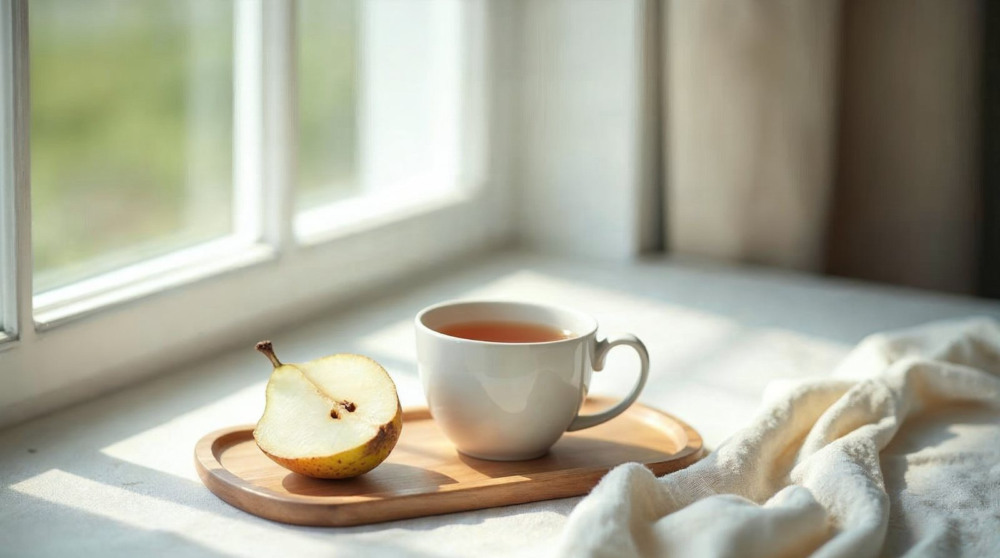
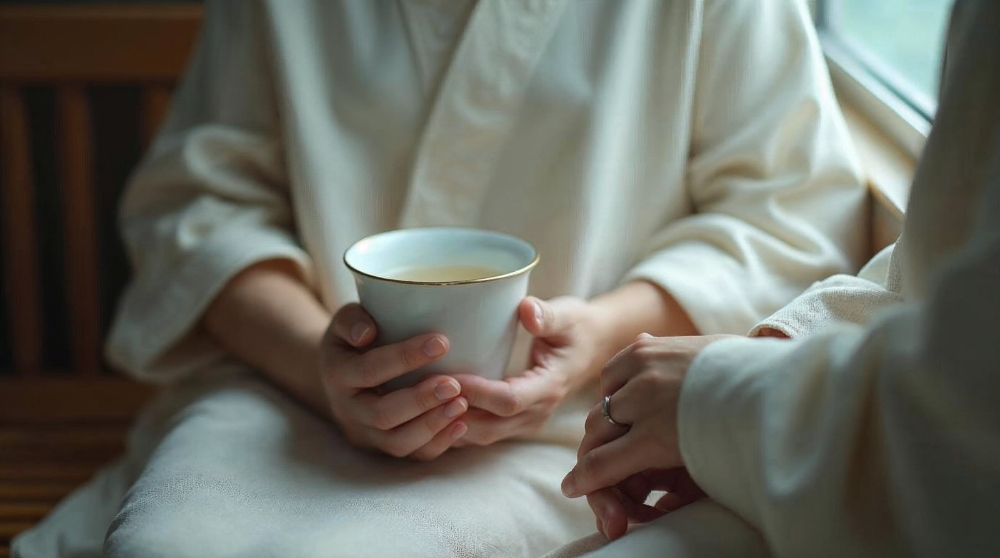
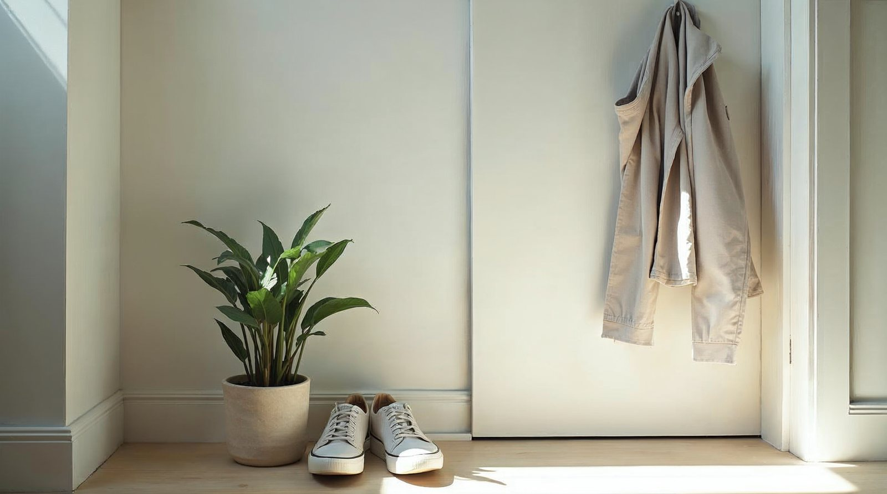
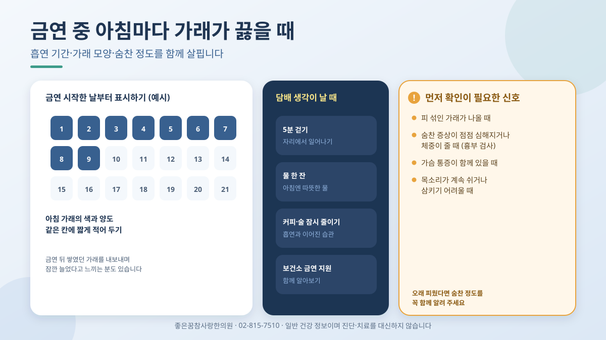

이종호 한의사 감수좋은꿈참사랑한의원 대표원장 (한의사 면허번호 19769)발행 2026-11-23 · 수정 2026-11-26
이 글의 차례
- 왜 이런 불편이 생길 수 있나요
- 왜 끊었는데 가래가 더 느껴질까요?
- 다른 원인과는 어떻게 구분하나요?
- 먼저 이렇게 여쭙니다
- 스스로 점검해 보세요
- 상황별 예시
- 일상에서 먼저 해 볼 수 있는 것
- 아침 가래는 어떻게 편하게 내보낼까요?
- 담배 생각이 몰려올 때는 어떻게 넘길까요?
- 술자리와 모임은 어떻게 넘길까요?
- 금연 중 식사와 체중은 어떻게 챙길까요?
- 잠과 초조함은 어떻게 다룰까요?
- 집과 차, 일하는 곳은 어떻게 정리할까요?
- 금연 첫 몇 주는 어떤 흐름일까요?
- 자주 하는 오해는 무엇인가요?
- 한의학에서는 금연 중 가래를 어떻게 바라보나요?
- 한의원에서 함께 살필 수 있는 경우
- 첫 진료는 어떤 순서로 진행되나요?
- 다시 오셨을 때는 무엇을 비교하나요?
- 얼마나 지켜보고 언제 상담할까요
- 이렇게 기록해 오시면 상담이 쉬워집니다
- 이런 증상은 먼저 확인이 필요합니다
담배를 끊으려는 중에 아침마다 가래가 끓는 것은 흡연으로 지쳐 있던 기도가 가래를 밀어내는 과정에서 나타나는 경우가 있어, 흡연량과 기간, 가래 모양, 숨찬 정도를 먼저 확인하고 금연을 이어갈 수 있게 생활 습관을 정리합니다. 마음먹고 끊었는데 오히려 가래와 기침이 늘어난 것 같아 불안하다는 분이 있습니다.
아침에 일어나 세면대 앞에서 한참 가래를 뱉어 내고, 출근길에도 목에 뭔가 걸린 듯 자꾸 기침이 나면 "끊어도 소용없는 건 아닐까" 하는 생각이 들기 쉽습니다. 담배 생각까지 겹치는 날이면 금연 결심이 흔들리기도 합니다.
저는 금연을 시작한 분을 만나면 먼저 그 결심을 귀하게 여깁니다. 그리고 지금 겪는 가래와 기침이 어떤 흐름인지 함께 살피고, 담배 없이 하루를 보내는 방법을 생활 속에서 같이 찾아갑니다.
왜 이런 불편이 생길 수 있나요
- 담배 연기는 기도의 섬모(가래를 밀어내는 가는 털)를 지치게 해 가래가 쌓이기 쉽습니다.
- 금연 뒤 기도가 회복되면서 쌓여 있던 가래를 내보내 잠깐 늘었다고 느끼는 분도 있습니다.
- 아침에는 밤사이 고인 가래가 한꺼번에 나와 더 심하게 느껴집니다.
- 오래 흡연했다면 만성 폐질환이 숨어 있을 수 있어 숨찬 정도를 꼭 함께 살핍니다.
- 금연 뒤 초조함과 잠의 변화가 함께 오면 몸이 지쳐 기침과 가래가 더 신경 쓰일 수 있습니다.
왜 끊었는데 가래가 더 느껴질까요?
기도 안쪽에는 가래를 목 쪽으로 밀어 올리는 아주 가는 털이 촘촘히 나 있습니다. 담배 연기를 오래 마시면 이 털들이 제대로 움직이지 못해, 가래가 밀려 나가지 못하고 기도 안에 머무르게 됩니다.
담배를 끊으면 이 털들이 조금씩 다시 움직이기 시작하면서, 그동안 쌓여 있던 가래를 밖으로 밀어 올립니다. 그래서 금연 초기에 오히려 가래와 기침이 늘었다고 느끼는 분이 있습니다. 담배를 피울 때는 연기에 목이 무뎌져 있다가, 끊고 나서 목의 감각이 되살아나며 가래를 더 또렷하게 느끼기도 합니다.
다만 모든 가래가 이런 회복 과정이라고 단정할 수는 없습니다. 그래서 가래의 색과 양, 숨찬 정도가 시간이 지나며 어떻게 바뀌는지를 함께 지켜봅니다.
다른 원인과는 어떻게 구분하나요?
- 금연 뒤 몇 주에 걸쳐 가래가 맑거나 희고, 시간이 지나며 조금씩 줄어든다면 기도가 회복되는 흐름일 가능성을 생각합니다.
- 콧물이 목 뒤로 넘어가는 느낌과 함께 헛기침이 잦다면 코 쪽 원인을 함께 봅니다.
- 콧물, 목 통증, 몸살과 함께 갑자기 가래가 늘었다면 감기가 겹친 경우를 먼저 생각합니다.
- 흡연하던 시절부터 가래가 계절과 상관없이 해마다 몇 달씩 이어져 왔다면, 금연과 함께 폐 상태를 한 번 확인해 두는 것이 좋습니다.

먼저 이렇게 여쭙니다
- 하루에 몇 개비를, 몇 년 정도 피우셨나요?
- 가래 색과 양은 어떤가요?
- 계단을 오를 때 예전보다 숨이 더 차나요?
- 담배 생각이 가장 강한 때는 언제인가요?
- 전자담배를 함께 쓰거나 바꿔 쓰셨나요?
스스로 점검해 보세요
- 아침에 일어나 첫 30분 안에 가래를 뱉는 일이 매일 있나요?
- 금연을 시작한 지 몇 주째인지 정확히 기억하나요?
- 커피를 마시거나 식사를 마친 직후 담배 생각이 가장 강한가요?
- 술자리에서 금연이 흔들린 적이 있나요?
- 금연 뒤 잠들기 어렵거나 밤에 자주 깨나요?
- 금연 뒤 군것질이나 단 음식이 부쩍 늘었나요?
- 물을 하루에 컵으로 다섯 잔도 마시지 않나요?
해당하는 항목이 있다면 아침 습관과 담배를 부르는 상황, 잠과 식사부터 하나씩 정리해 보세요.
상황별 예시
- 예를 들어 아침 커피와 함께 담배를 피우던 습관이 있었다면, 금연 기간에는 커피를 잠시 따뜻한 물이나 차로 바꾸고 마시는 장소도 바꿔 담배와 이어진 고리를 느슨하게 해 봅니다.
- 예를 들어 점심 식사 뒤 동료들과 흡연 공간에 함께 나가던 경우라면, 그 시간에 혼자 5분 걷기나 양치를 하는 것으로 일정을 바꿔 봅니다.
- 예를 들어 금연 뒤 밤에 잠이 얕아지고 새벽에 자주 깬다면, 저녁 커피를 줄이고 잠들기 전 따뜻한 물로 씻는 시간을 정해 두며, 깬 시각을 적어 둡니다.
- 예를 들어 운전 중 담배를 피우던 습관이 있었다면, 차 안 재떨이와 라이터를 치우고 대신 물병과 무가당 껌을 두어 손과 입이 갈 곳을 만들어 둡니다.
- 예를 들어 금연 2주째에 가래가 오히려 늘어 불안한 경우라면, 매일 아침 가래의 색과 양을 한 줄씩 적어 몇 주 동안 어떻게 바뀌는지 지켜봅니다.
일상에서 먼저 해 볼 수 있는 것
- 아침에 일어나 따뜻한 물 한 잔 마시기
- 담배 생각이 날 때 5분 걷거나 물 마시기
- 커피와 술처럼 흡연과 이어진 습관 잠시 줄이기
- 보건소에서 운영하는 금연 클리닉 같은 지원도 함께 알아보기
- 금연을 시작한 날을 달력에 표시하고 하루하루 기록하기
아침 가래는 어떻게 편하게 내보낼까요?
일어나자마자 미지근한 물을 한 잔 천천히 마시면 끈적한 가래가 조금 묽어져 뱉기 쉬워집니다. 그다음 따뜻한 물로 샤워하며 김을 몇 번 들이마시는 것도 도움이 됩니다.
가래를 내보낼 때는 목을 세게 긁어 올리기보다, 숨을 깊이 들이쉰 뒤 '허' 하고 두세 번 힘을 주어 내쉬고 나서 가볍게 기침해 보세요. 억지로 여러 번 세게 기침하면 목만 더 아파지기 쉽습니다.
낮 동안에도 물을 자주 나눠 마시면 가래가 덜 끈적해집니다. 실내가 건조하다면 습도를 40~60% 정도로 맞춰 주세요. 잠잘 때 베개를 조금 높이면 밤사이 목에 가래가 고이는 느낌이 덜하다는 분도 있습니다. 아침에 뱉은 가래의 색을 휴지에서 한 번 보고 기록해 두면 다음 진료 때 이야기하기 쉽습니다.
담배 생각이 몰려올 때는 어떻게 넘길까요?
담배 생각은 대개 몇 분 동안 강하게 몰려왔다가 잦아드는 경우가 많습니다. 그 몇 분을 넘길 방법을 미리 정해 두면 한결 수월합니다. 물을 한 컵 천천히 마시기, 자리에서 일어나 계단을 오르내리기, 창가에서 깊게 숨 쉬기처럼 손과 몸이 바로 할 수 있는 일을 두세 가지 골라 휴대폰 메모에 적어 두세요.
담배 생각이 강해지는 시간과 상황을 적어 보면 하루에 몇 번, 언제 오는지가 보입니다. 그 시간이 오기 전에 미리 다른 일을 끼워 넣는 것도 방법입니다. 금연을 시작했다는 것을 가까운 사람들에게 알려 두면 술자리 같은 곳에서도 덜 흔들립니다.
술자리와 모임은 어떻게 넘길까요?
금연이 가장 많이 흔들리는 자리가 술자리입니다. 술이 들어가면 마음이 느슨해지고, 옆에서 담배를 피우는 사람이 있으면 한 개비쯤은 괜찮겠다는 생각이 들기 쉽습니다.
금연 첫 몇 주는 술자리를 줄이거나, 나가더라도 일찍 일어나는 시간을 미리 정해 두세요. 자리에서는 흡연하는 사람들과 떨어진 쪽에 앉고, 손이 허전할 때 쥘 물잔을 곁에 두는 것도 방법입니다. 모임 전에 "요즘 담배 끊었어"라고 먼저 말해 두면 권하는 사람도 줄어듭니다.
금연 중 식사와 체중은 어떻게 챙길까요?
담배를 끊으면 입이 심심하고 입맛이 살아나 군것질이 늘어나는 분이 많습니다. 세 끼를 일정한 시간에 챙겨 먹고, 입이 심심할 때는 오이나 당근 같은 채소, 물, 무가당 껌을 곁에 두세요.
단 음식과 기름진 간식은 담배 대신 손이 가기 쉬운 것들이라, 집이나 사무실에 쌓아 두지 않는 것이 좋습니다. 체중이 조금 늘더라도 금연을 이어 가는 것이 먼저이고, 식사와 걷기로 천천히 맞춰 가면 됩니다.
잠과 초조함은 어떻게 다룰까요?
금연 초기에는 잠이 얕아지거나 쉽게 짜증이 나고 집중이 잘 안 된다는 분이 많습니다. 몸이 담배 없는 상태에 익숙해지는 동안 생기는 흔한 변화로, 대개 시간이 지나며 조금씩 잦아드는 경우가 많습니다.
이 시기에는 저녁 커피와 술을 줄이고, 잠드는 시각을 일정하게 지켜 주세요. 저녁에 20~30분 가볍게 걷고 따뜻한 물로 씻으면 몸의 긴장이 풀려 잠들기 한결 편하다는 분이 있습니다. 초조함이 몰려올 때는 천천히 숨을 내쉬는 것에 집중해 보세요.
집과 차, 일하는 곳은 어떻게 정리할까요?
담배와 라이터, 재떨이가 눈에 보이면 손이 먼저 갑니다. 금연을 시작한 날 집과 차, 가방, 책상 서랍에 남아 있는 것들을 모두 치워 주세요. 담배 냄새가 밴 겉옷과 차 안 시트도 한 번 세탁하거나 환기해 두면, 냄새가 담배 생각을 불러오는 일이 줄어듭니다.
흡연하던 자리에는 다른 물건을 두어 그 자리의 의미를 바꿔 보는 것도 방법입니다. 베란다에 작은 화분을 두거나, 회사 흡연 공간 대신 걸을 수 있는 짧은 산책길을 정해 두세요.
함께 사는 가족이나 가까운 동료가 흡연자라면 금연 기간에는 내 앞에서 피우지 않도록 부탁해 보세요. 간접 연기도 기도를 자극하고, 담배 생각을 다시 불러오기 쉽습니다.
금연 첫 몇 주는 어떤 흐름일까요?
금연 첫 며칠은 담배 생각이 가장 강하고, 초조함과 잠의 변화가 몰려오는 시기라는 분이 많습니다. 이 시기를 넘기면 담배 생각이 오는 횟수가 조금씩 줄어들고, 대신 가래와 기침이 신경 쓰인다는 분이 늘어납니다.
몇 주가 지나면 아침에 목이 한결 가볍다거나, 음식 맛과 냄새가 또렷해졌다고 느끼는 분도 있습니다. 사람마다 속도는 다르니 남과 비교하기보다 내 기록을 지난주와 비교해 보세요. 흔들리는 날이 있어도 스스로를 탓하기보다, 다시 시작한 날부터 이어서 세면 됩니다.
자주 하는 오해는 무엇인가요?
- 오래 피웠으니 이제 끊어도 소용없다는 생각: 금연은 언제 시작해도 기도와 몸이 회복할 기회를 줍니다.
- 가래가 늘었으니 금연이 몸에 맞지 않는다는 생각: 금연 초기에는 기도가 쌓인 가래를 내보내며 잠깐 늘었다고 느끼는 경우가 있습니다.
- 한 개비쯤은 괜찮다는 생각: 한 개비가 다시 흡연으로 이어지는 경우가 많아, 담배 생각이 날 때 대신할 행동을 미리 정해 두는 것이 좋습니다.
- 개비 수만 줄이면 된다는 생각: 줄이는 것도 시작이지만, 몸이 회복할 기회를 주려면 완전히 끊는 방향을 권합니다.
한의학에서는 금연 중 가래를 어떻게 바라보나요?
한의학에서는 가래가 잘 생기고 끈적한 모습을 몸의 물길이 잘 돌지 않아 노폐물이 쌓이는 경향과 연결해 살피는 경우가 있습니다. 오래 흡연한 분은 목과 기도가 마르고 열이 차 있는 모습이 함께 보이기도 합니다.
그래서 가래만 보지 않고 입이 자주 마르는지, 소화와 대변은 어떤지, 잠과 마음의 긴장은 어떤지를 함께 여쭙니다. 대표원장은 잘 먹고, 잘 싸고, 잘 자고, 마음 편하고, 몸 따뜻하게, 이 다섯 가지를 몸이 회복하는 바탕으로 보고, 금연 중인 분께도 이 바탕을 함께 살핍니다.

한의원에서 함께 살필 수 있는 경우
- 금연 중 가래와 기침, 답답함이 있는 경우 호흡기 상태와 생활 리듬을 함께 살핍니다.
- 금연으로 잠이 얕아지거나 입맛이 크게 늘어난 경우 함께 살핍니다.
- 초조함과 스트레스가 큰 경우 마음의 긴장도 함께 여쭙니다.
좋은꿈참사랑한의원에서는 모든 분께 그렇듯 맥부터 짚으며 흡연 습관과 금연을 시작한 때를 여쭙고, 필요하면 혀(설진)도 살핀 뒤 침이나 한약 상담 등 상태에 맞는 방법을 정합니다. 숨찬 증상이 뚜렷하면 흉부 검사를 먼저 안내합니다.
금연 보조제나 처방받은 약을 쓰고 계신다면 이름을 알려 주세요. 처방받은 약은 처방한 의사와 상의 없이 줄이거나 끊지 마시고, 한약 상담도 지금 쓰는 약과 보조제를 확인한 뒤에 진행합니다. 임신 중이거나 준비 중이라면 먼저 말씀해 주시고 산부인과와도 상의해 주세요.
첫 진료는 어떤 순서로 진행되나요?
- 모든 분의 맥을 먼저 짚고, 흡연 기간과 하루 개비 수, 금연을 시작한 날을 듣습니다.
- 아침 가래의 색과 양, 기침, 계단을 오를 때의 숨찬 정도를 여쭙니다.
- 담배 생각이 강해지는 상황, 잠과 식사의 변화, 쓰는 금연 보조제와 약을 확인합니다.
- 상태에 맞는 방법을 정한 뒤, 다음 진료까지 이어 갈 습관과 기록할 것을 함께 정합니다.
다시 오셨을 때는 무엇을 비교하나요?
두 번째 진료부터는 다시 맥을 짚고, 그사이 적어 오신 아침 가래 기록을 함께 봅니다. 가래의 색과 양이 어떻게 바뀌었는지, 기침으로 깬 밤이 있었는지, 계단을 오를 때 숨이 어땠는지를 나눠 여쭙니다.
담배 생각이 강했던 순간을 어떻게 넘겼는지, 흔들렸던 날은 무엇 때문이었는지도 함께 이야기합니다. 잘 넘긴 방법은 이어 가고, 어려웠던 상황에는 다른 대처를 함께 찾아봅니다.
얼마나 지켜보고 언제 상담할까요
금연 초기 몇 주 동안은 아침 가래의 색과 양을 매일 한 줄씩 적어 보세요. 시간이 지나도 가래가 줄지 않거나, 기침으로 잠을 자주 설치거나, 금연이 자꾸 흔들려 힘들다면 상담을 받아 보시기를 권합니다.

이렇게 기록해 오시면 상담이 쉬워집니다
- 흡연 기간과 하루 개비 수, 금연을 시작한 날
- 아침 가래의 색과 양
- 담배 생각이 강해지는 시간과 상황
- 쓰고 있는 금연 보조제나 약
달력에 금연 날짜를 하루씩 지워 가며, 그 칸에 가래 상태를 '많음·보통·적음'으로 적어 보세요. 지운 칸이 늘어나는 것을 눈으로 보는 것만으로도 금연을 이어 갈 힘이 된다는 분이 많습니다.
담배를 내려놓기로 한 그 결심이 끝까지 이어지도록, 오시면 가장 힘들었던 순간부터 함께 이야기해 보겠습니다.
이런 증상은 먼저 확인이 필요합니다
- 피 섞인 가래가 나오는 경우
- 숨찬 증상이 점점 심해지거나 체중이 줄어드는 경우
이런 신호가 있으면 한의원보다 가까운 병원이나 응급실을 먼저 찾으세요.

여쭙는 것
- 하루에 몇 개비를, 몇 년 정도 피우셨나요?
- 가래 색과 양은 어떤가요?
- 계단을 오를 때 예전보다 숨이 더 차나요?
생활에서 해 볼 것
- 아침에 일어나 따뜻한 물 한 잔 마시기
- 담배 생각이 날 때 5분 걷거나 물 마시기
- 커피와 술처럼 흡연과 이어진 습관 잠시 줄이기
한의원에서 함께 살필 것
- 금연 중 가래와 기침, 답답함이 있는 경우 호흡기 상태와 생활 리듬을 함께 살핍니다.
- 금연으로 잠이 얕아지거나 입맛이 크게 늘어난 경우 함께 살핍니다.
- 초조함과 스트레스가 큰 경우 마음의 긴장도 함께 여쭙니다.
먼저 확인이 필요한 신호
- 피 섞인 가래가 나오는 경우
- 숨찬 증상이 점점 심해지거나 체중이 줄어드는 경우
한눈에 보는 표
| 구분 | 핵심 |
|---|---|
| 여쭙는 것 | 하루에 몇 개비를, 몇 년 정도 피우셨나요? 가래 색과 양은 어떤가요? |
| 생활에서 해 볼 것 | 아침에 일어나 따뜻한 물 한 잔 마시기 담배 생각이 날 때 5분 걷거나 물 마시기 |
| 한의원에서 함께 살필 것 | 금연 중 가래와 기침, 답답함이 있는 경우 호흡기 상태와 생활 리듬을 함께 살핍니다. 금연으로 잠이 얕아지거나 입맛이 크게 늘어난 경우 함께 살핍니다. |
| 먼저 확인이 필요한 신호 | 피 섞인 가래가 나오는 경우 숨찬 증상이 점점 심해지거나 체중이 줄어드는 경우 |
자주 묻는 질문
금연하면 가래가 더 늘 수 있나요?
금연 초기에 가래가 잠깐 늘었다고 느끼는 분도 있습니다. 아침 가래의 색과 양을 며칠 적어 오시면 변화를 함께 살핍니다.
금연 보조제와 함께 진료를 받아도 되나요?
드시는 약이나 보조제는 알려 주시면 함께 확인합니다.
금연하면 살이 찌지 않을까 걱정돼요.
입맛이 늘어나는 분이 있어 식사 시간과 간식을 함께 정리합니다. 체중보다 금연을 이어가는 것이 먼저입니다.
전자담배로 바꾸면 가래가 줄까요?
전자담배도 기도를 자극할 수 있어 완전히 끊는 방향을 권합니다. 보건소 금연 지원도 함께 알아보세요.
금연 중에 운동을 시작해도 되나요?
가벼운 걷기부터 시작하는 것을 권합니다. 몸을 움직이면 담배 생각을 넘기는 데도 도움이 된다는 분이 많습니다. 숨이 많이 차면 무리하지 말고 쉬어 가세요.
좋은꿈참사랑한의원은 재진 때 지난번 이야기부터 이어서 여쭙니다. 진료시간과 예약은 오시는 길에서 확인하세요.
어디서 상담받을 수 있나요?
좋은꿈참사랑한의원은 서울 동작구 만양로2길 2 신성빌딩 3층·5층(서울 동작구 상도동, 7호선 상도역 3번 출구 근처)에 있습니다. 한의사 3명(이종호 대표원장, 조영기 수석진료원장, 정원영 진료원장)이 진료합니다. 진료시간은 평일 09:30~20:00(점심 13:00~14:00), 토·일·공휴일 09:30~15:00이며, 방문 전 전화로 확인을 권합니다. 예약은 네이버 예약, 카카오톡 상담, 전화 02-815-7510로 받습니다.
이 글은 일반적인 건강 정보이며 개인의 진단이나 치료를 대신하지 않습니다. 증상이 있거나 복용 중인 약이 있다면 진료를 통해 확인하세요. 치료 효과는 개인마다 다를 수 있습니다.
작성 기준: 일반적으로 알려져 있는 건강 정보를 참고해 정리했습니다(대표원장 감수). 증상 기록은 1~2주 동안 하루 1회, 비슷한 시간에 적어 오시면 지난 상태와 비교하기 쉽습니다.